About Me
I am Nani Mengs, born in 1998 in Plymouth, UK. At the age of 7 in 2005, I began my journey as a football player.
My first team was Sunderland FC, where I played for 4 years before moving to Manchester United in 2009.
My debut game for Manchester United was against Chelsea FC, where I scored 2 goals—an unforgettable moment!
I have played for Manchester United for 10 years and I have won 6 Premier League titles, 2 FA Cups and 1 UEFA Champions league.
My best moment was the day I scored the winning goal against Barcelona in the UEFA champions league final in 2011.
My football career has been a great journey and I am grateful for the opportunity to play for Manchester United.
Photo Gallery
 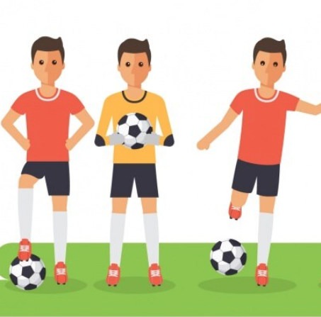
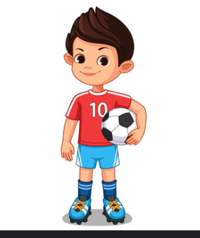
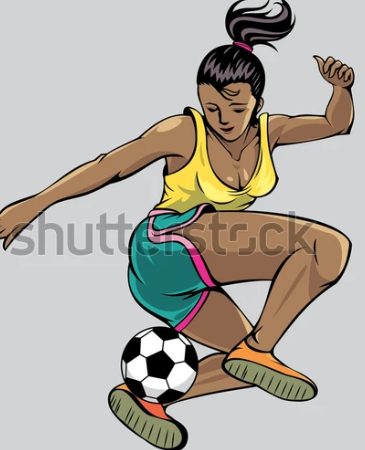
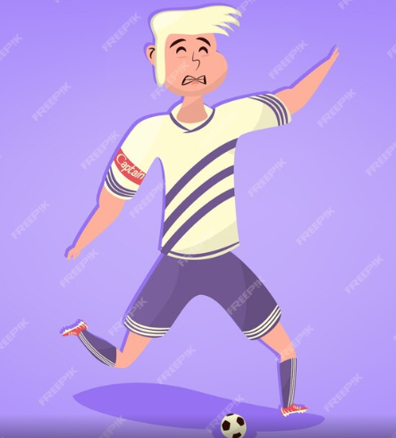
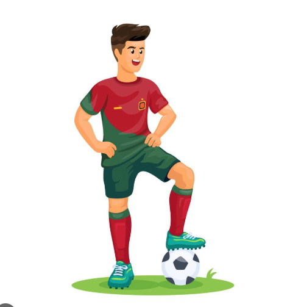
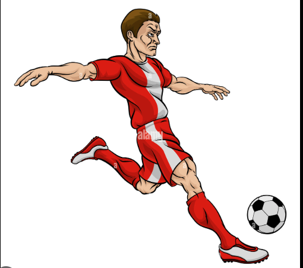
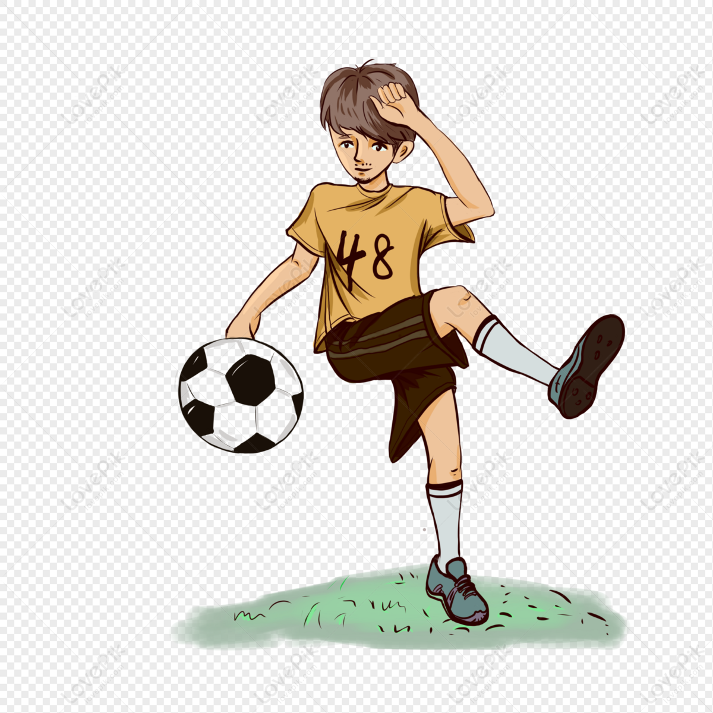
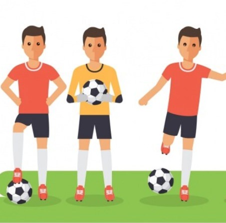
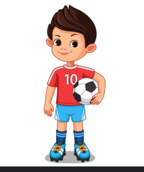
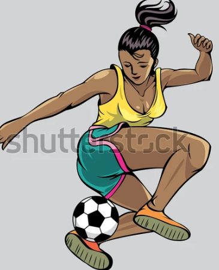
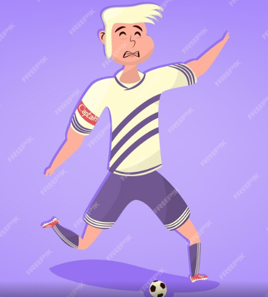
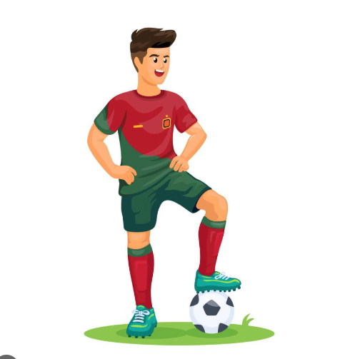
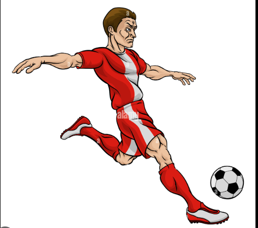
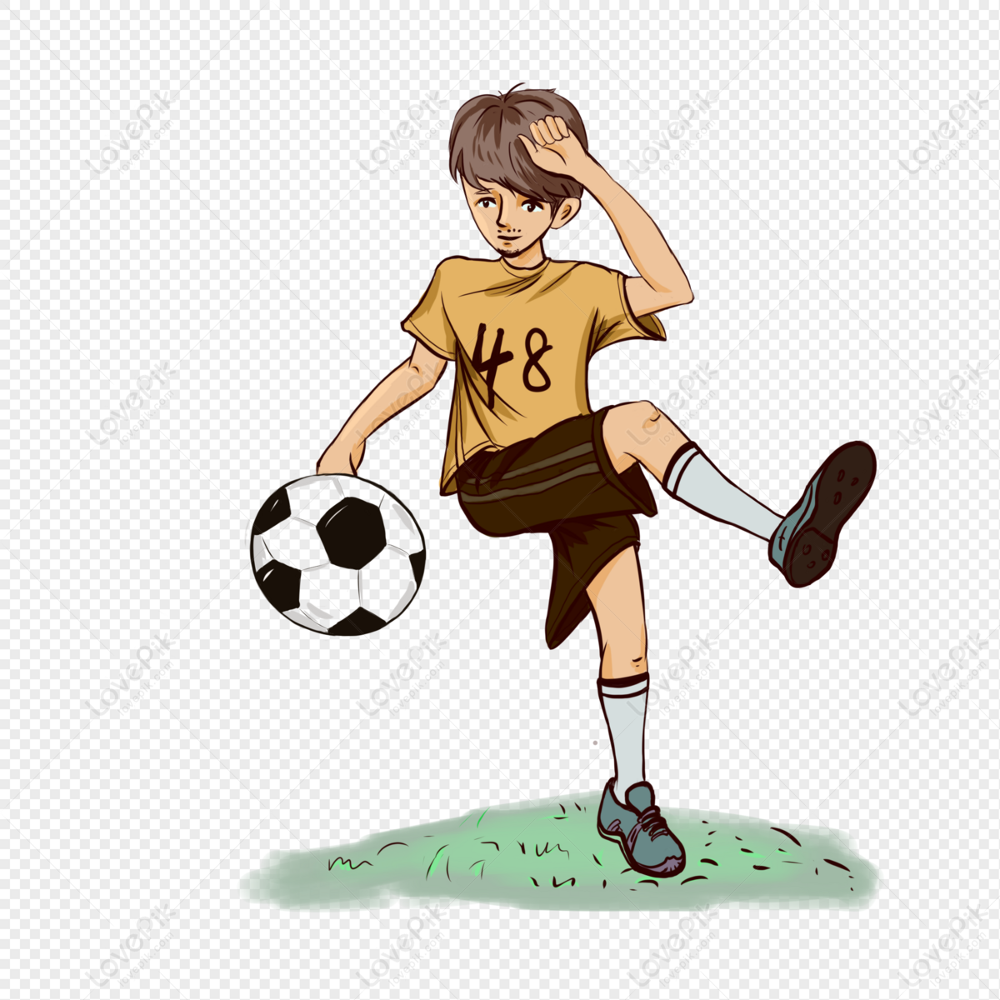
Football Abilities
Techniques
Dribbling and ball control
Shooting and Finishing
Crossing Ability
Position
Attacker
Left winger
Mental Strength
Leadership and Communication
Discipline and Focus